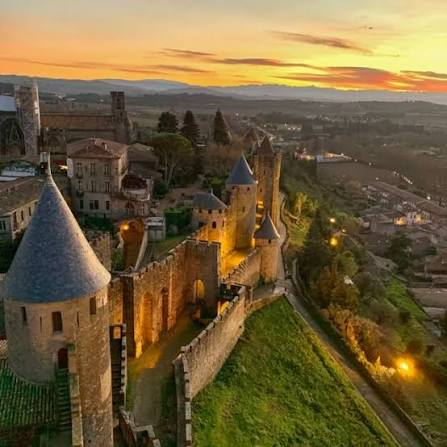

Château
Comtal


⟹ Musées & Patrimoine ⟸
Cœur battant de la Cité médiévale de Carcassonne, le Château comtal est édifié vers 1150 par Bernard Aton Trencavel, sur le point le plus haut de la butte, à l'emplacement d'un ancien château narbonnais dont il ne subsiste rien aujourd'hui. Cette forteresse dans la forteresse résume à elle seule 900 ans d'histoire, des premiers vicomtes Trencavel aux restaurations du XIXe siècle.

Au XIIIe siècle, le château devient le théâtre de la croisade contre les Albigeois : le jeune vicomte Raimond-Roger Trencavel y est fait prisonnier par Simon de Montfort en 1209 et y meurt peu après. La vicomté passe alors sous le contrôle direct de la couronne française, et sous Saint Louis, l'ancien palais des Trencavel est transformé en véritable château-fort, résidence du sénéchal royal, renforcé par une seconde enceinte.
Laissée à l'abandon après le rattachement du Roussillon à la France en 1659, qui lui fait perdre son rôle stratégique de place frontière, la Cité tombe en ruine avant d'être sauvée par la campagne de restauration menée à partir de 1853 par Eugène Viollet-le-Duc, qui lui redonne l'allure médiévale qu'on lui connaît aujourd'hui.
Classée au patrimoine mondial de l'UNESCO en 1997, la Cité de Carcassonne témoigne de 2 500 ans d'histoire et de 1 000 ans d'architecture militaire, occupée dès le VIe siècle avant J.-C., puis ville romaine fortifiée avant de devenir cité médiévale.
Après l'échec de la tentative de reconquête de Raimond II Trencavel en 1240, la monarchie capétienne renforce considérablement la place. Au XIIIe siècle, l'ancien palais vicomtal est enveloppé de courtines et de tours et devient une forteresse royale. Une seconde enceinte, longue d'environ 1 600 mètres, double alors le rempart antique ; la Cité acquiert l'essentiel de son système défensif actuel sous Philippe III le Hardi et Philippe IV le Bel.
Le château n'est pas seulement un ouvrage militaire : après le rattachement au domaine royal en 1226, il devient la résidence du sénéchal, représentant du roi. Au début du XIVe siècle, de nouvelles grandes salles sont aménagées pour l'exercice de l'autorité royale. La tour Pinte, élevée sur le front occidental, reste l'un des repères majeurs de l'ancien palais des Trencavel.
La restauration conduite au XIXe siècle doit aussi être comprise comme un jalon majeur de l'histoire de la conservation du patrimoine en France. Après l'action de l'érudit carcassonnais Jean-Pierre Cros-Mayrevieille et de Prosper Mérimée, Viollet-le-Duc entreprend la restauration de la Cité ; le chantier, commencé au milieu du siècle, se poursuit après sa mort et n'est achevé qu'en 1911.
Avant le château médiéval, la butte de Carcassonne est occupée depuis l'Antiquité et protégée par une enceinte gallo-romaine dont une partie est encore intégrée aux fortifications. Le palais des Trencavel vient précisément s'appuyer sur ce rempart ancien : le château est donc le résultat d'une superposition de systèmes défensifs et résidentiels qui permet de lire, dans un même monument, plusieurs siècles d'architecture.
Au XIIe siècle, les Trencavel font de Carcassonne l'un des principaux centres de leur vaste ensemble féodal. Le palais vicomtal n'est alors pas seulement une forteresse : c'est une résidence aristocratique et un lieu de gouvernement. Il s'agrandit progressivement, notamment avec une chapelle dédiée à Sainte-Marie et de nouvelles ailes, tandis que ses salles affirment le rang d'une dynastie qui contrôle également Béziers, Albi et le Razès.
La croisade contre les Albigeois bouleverse cet équilibre. En août 1209, après la prise de Béziers, l'armée croisée assiège Carcassonne. Raimond-Roger Trencavel capitule et meurt en captivité quelques mois plus tard. Simon de Montfort prend la tête de la vicomté, mais l'héritage trencavélien demeure contesté pendant plusieurs décennies. En 1240, Raimond II Trencavel tente une dernière reconquête de la Cité ; son échec ouvre la voie à une transformation profonde de Carcassonne en place forte de la monarchie capétienne.
Sous Louis IX puis Philippe III le Hardi et Philippe IV le Bel, la défense est entièrement repensée. L'ancien palais est isolé du reste de la Cité par ses propres fossés et courtines ; une seconde enceinte d'environ 1 600 mètres double le rempart antique, les tours sont adaptées au tir à l'arbalète et les accès sont renforcés. La porte Narbonnaise et les grands ouvrages de la fin du XIIIe siècle inscrivent Carcassonne dans le dispositif frontalier du royaume de France face à la couronne d'Aragon.
Le traité des Pyrénées de 1659, qui rattache notamment le Roussillon à la France et repousse la frontière vers le sud, retire à Carcassonne une grande partie de sa fonction stratégique. La forteresse connaît alors une longue période de déclassement. Au XIXe siècle, alors que des destructions menacent plusieurs parties de la Cité, l'érudit Jean-Pierre Cros-Mayrevieille et l'inspecteur des Monuments historiques Prosper Mérimée jouent un rôle décisif dans sa sauvegarde.
La restauration confiée à Eugène Viollet-le-Duc à partir du milieu du XIXe siècle constitue un chapitre historique à part entière. L'architecte cherche à restituer la cohérence d'un système défensif médiéval, parfois en complétant les parties disparues selon sa connaissance de l'architecture militaire. Après sa mort en 1879, ses successeurs poursuivent le chantier jusqu'au début du XXe siècle. Ces interventions, longtemps discutées, sont aujourd'hui indissociables de l'image de Carcassonne et de l'histoire moderne de la conservation monumentale.
L'inscription de la ville historique fortifiée de Carcassonne au patrimoine mondial de l'UNESCO en 1997 reconnaît à la fois l'exceptionnelle conservation de son ensemble défensif et l'importance de la campagne de restauration du XIXe siècle. Le château comtal en est le centre d'interprétation : ses cours, tours, salles, chemins de ronde et collections archéologiques permettent de comprendre la transformation d'un palais féodal en forteresse royale puis en monument patrimonial.
Basilique Saint-Nazaire : à quelques pas dans l'enceinte de la Cité, chef-d'œuvre roman et gothique aux vitraux remarquables.
Remparts extérieurs et les Lices : promenade entre les deux enceintes fortifiées de la Cité, un espace unique en Europe.
La ville basse de Carcassonne : bastide médiévale du XIIIe siècle, de l'autre côté de l'Aude.
Canal du Midi : classé à l'UNESCO, à quelques minutes en voiture du centre-ville.